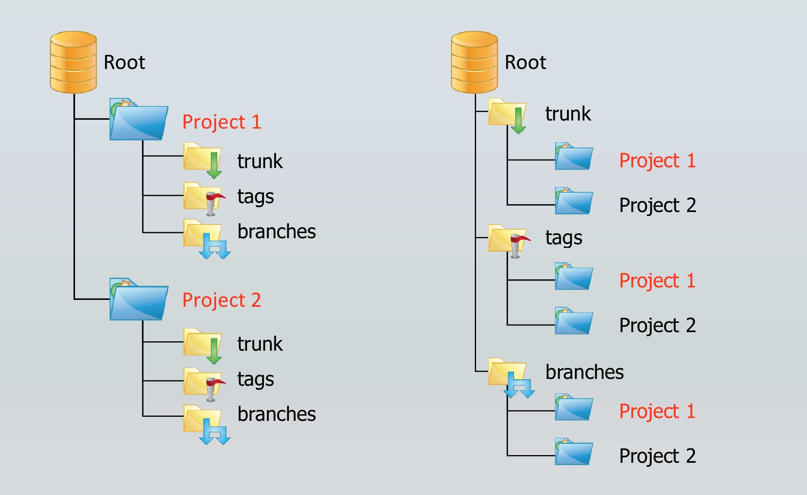
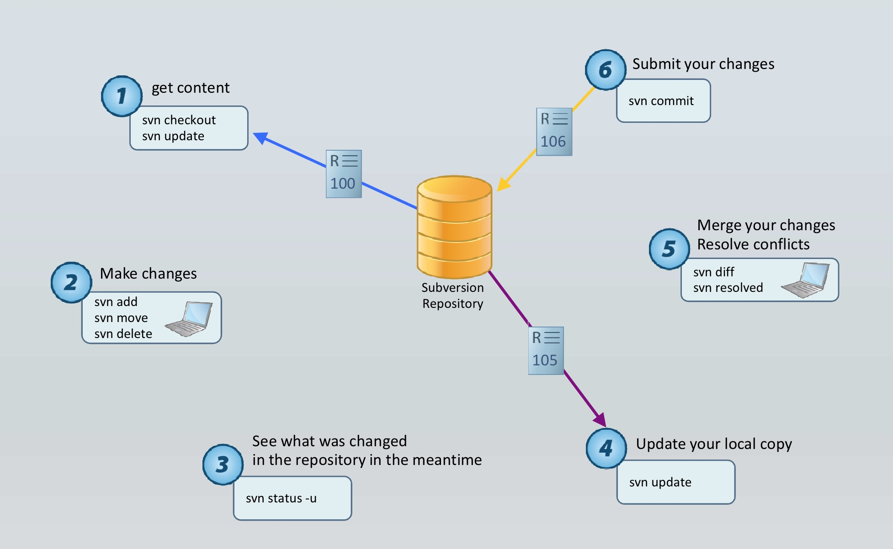

By 孙得心 sundexin.com
SVN 是 Subversion 的简称，是一个开放源代码的版本控制系统；类似的版本控制系统还有 CVS、GIT 等。
| 修订版、版本号(Revision) | 可以认为是某个文件在其生命周期内各个保存的快照,每个快照和一个时间区间对应 |
| 版本库、配置库(Repository) | 存放修订版的数据库 |
| 本地工作拷贝(Local working copy) | 修订版在本地的副本 |
| 检出(Check out) | 从服务器的版本库中取出修订版成为本地副本 |
| 版本号计数方式 | 有两种策略,基于文件的计数和基于仓库的计数, Subversion 使用后者 |
| 合并(Merging) | 将分支的修订版合并为一个新的修订版 |
| 锁(Locking) | 标记正在修改的状态 |
| 冲突(Conflict) | 并发版本控制时防止修订版混乱的错误机制 |
主线(Trunk)
代码、文档存放于此,按内容定义目录，分类存放。
基线(Tags)
Trunk某一版本的只读拷贝，用于打标签。
标记发布版本，追查历史、回退使用。
分支(Branches)
用于多版本的并行开发。
合并到主线时,可能会发生较多的冲突,建议有计划地使用分支。

SVN 地址
https://svn.intra.sina.com.cn/xxx/
https://svn1.intra.sina.com.cn/xxx/
权限申请
找对应的 SVN 库管理员
按目录授权
只读权限(查看、下载到本地)
读写权限(文件&文件夹的增、删、改、查)
Help:
svn help
svn ?Usage:
svn <subcommand> [options] [args]Available subcommands:
add
blame (praise, annotate, ann)
cat
changelist (cl)
checkout (co)
cleanup
commit (ci)
copy (cp)
delete (del, remove, rm)
diff (di)
export
help (?, h)
import
info
list (ls)
lock
log
merge
mergeinfo
mkdir
move (mv, rename, ren)
patch
propdel (pdel, pd)
propedit (pedit, pe)
propget (pget, pg)
proplist (plist, pl)
propset (pset, ps)
relocate
resolve
resolved
revert
status (stat, st)
switch (sw)
unlock
update (up)
upgradeSVN 目录映射到本地 working copy (当前文件夹),下载服务器上最新版文件
svn checkout https://xxxxx/xxx/xxx
svn co https://xxxxx/xxx/xxx更新本地 working copy
svn update
svn up将本地修改上传到服务器
svn commit -m "message"
svn ci -m "message"新建目录
svn mkdir dirname本地文件上传到服务器 (commit 之后才真正上传)
svn add filename本地文件删除,commit 之后服务器上删除,查历史可以恢复
svn delete filename查看当前目录的 commit 记录
svn log查看本地文件修改情况
svn status
svn st返回值含义
a 标记了要上传的文件
? 本地私有文件,无版本标识
d 本地删除了,但未上传
m 本地修改了,但未上传
K 加锁文件
C 有冲突的文件
! 有版本标识,但文件丢失或损坏
I 没有版本标识,Subversion设置了忽略显示本地或远程条目的信息。
svn info本地文件修改情况对比。(仅针对文本文件)
svn diff -r N:M path查看最后一次 update 到本地的文件内容。
svn cat filenameSVN 文件下载到本地,不含 .svn 文件夹,代码上线时推荐使用。
svn export https://xxx/xx/ localfolder本地文件上传到 SVN。
svn import localfolder https://xxx/xxx/ -m "message"放弃修改。
svn revert filename拷贝,版本分支和标签等概念都通过它实现。
svn copy path/file_name newpath/new_file_name -m "xxxx"重命名目录/文件。
svn move file_name new_file_name本地 working copy 出现异常时使用。
svn cleanup合并分支到主干。
svn merge -r N:M branch_path解决冲突。
svn resolve file_name –accept mine-conflict
svn resolve file_name –accept theirs-conflict标记冲突已解决。
svn resolved file_name创建、移动、复制、删除必须使用 SVN 命令。
svn move
svn delete
svn copy
svn mkdir
及时更新
本地 working copy 需要通过 Update 获得更新
修改本地文件前,建议更新
代码定期进行全目录的更新
上传正确的文件
文件直接更新即可,不要上传压缩包
本机临时生成的文件,不要上传
自动生成的文件,不要上传
正确上传文件
使用 SVN 命令将本地修改上传,避免删掉再上传,会造成版本丢失
原子操作
一次修改涉及的多个文件的,一次性全部上传到 SVN 服务器
区分 checkout 和 export
chekcout 会建立本地 working copy 和 SVN 服务器的映射,在本地每个目录下建立隐藏的 .svn 目录
export 导出 SVN 目录,不带版本信息,不含 .svn 目录(上线时请使用 export)
谨慎加锁
SVN 锁,用于标记正在修改,建议只在关键文件修改前进行加锁、改完即刻上传解锁
如果需要操作的文件被锁住,请主动联系加锁的同事
Log 信息
每次 commit 时,写清楚本次修改的信息, 比如 JIRA 号,修改功能描述, bug fix 信息
有计划地建立分支
SVN 自动合并不一定正确,合并后需检查。